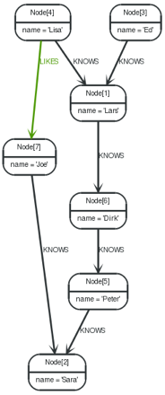

6.2. 遍历查询框架 Java API¶
除了 Node 和 Relationship 遍历查询框架还包括一些主要的接口:
TraversalDescription ，Evaluator ，Traverser 和 Uniqueness 是一些主要的。Path接口在遍历中还有一个特殊的用途，因为当评估该位置时它常被用来表示在图中的一个位置。
此外， PathExpander (代替 RelationshipExpander ) 和 Expander 接口是遍历框架中的核心，但API的用户很少需要自己去实现它们。对于高级应用，也有一个设置接口，当需要精确控制遍历的顺序的时候，可以采用： BranchSelector , BranchOrderingPolicy 和 TraversalBranch 。
6.2.1. TraversalDescription¶
TraversalDescription 是用来定义和初始化遍历查询的非常重要的接口。这并不是说要用户去实现遍历查询框架，而是相对于有框架提供的实现来说，这提供了一个用户自定义查询条件的方法。 TraversalDescription 实例是不可改变的而它的方法返回一个新的 TraversalDescription 实例是可以改变的。
Relationships
6.2.2. Evaluator¶
大量的Evaluator是用来决定在每一个位置（用一个 Path 表示）：是应该继续遍历查询以及节点是否包括在结果中。对于一个给定的 Path ，它要求对遍历查询分支采用下面四个动作中的一种：
- Evaluation.INCLUDE_AND_CONTINUE : 包括这个节点在结果中并且继续遍历查询。
- Evaluation.INCLUDE_AND_PRUNE : 包括这个节点在结果中并且继续不遍历查询。
- Evaluation.EXCLUDE_AND_CONTINUE : 排除这个节点在结果中并且继续遍历查询。
- Evaluation.EXCLUDE_AND_PRUNE : 排除这个节点在结果中并且继续不遍历查询。
Evaluator 可以加入多个。注意 Evaluator 将被遍历过程中遇到的每一个位置所调用，甚至包括起点节点。
6.2.3. Traverser¶
Traverser 对象是调用一个 TraversalDescription 的
traverse()方法返回的结果。它表示正一个图数据库中遍历的位置集合和结果格式化的一个规范。实际的遍历在每次的执行中都是懒加载的，只有当我们调用 Traverser 的方法
next()时才会被真正执行。
6.2.4. Uniqueness¶
在Uniqueness中说明了一个设置规则，这个规则决定在一个遍历期间如何访问已经访问过的位置策略。默认规则是 NODE_GLOBAL 。
一个 Uniqueness 能提供给 TraversalDescription ,用来决定一个遍历是否重新可以访问相同的位置。不同的策略级别可以使用：
- NONE ：在图数据库中任何节点都可以被重访。
- NODE_GLOBAL uniqueness ：在图数据库中每个节点只能被访问一次。这会潜在的消耗大量的内存因为图要求保持一个内存中的数据结构用来保存所有被访问过的节点。
- RELATIONSHIP_GLOBAL uniqueness ：在图数据库中每个关系只能被访问一次。这会潜在的消耗大量的内存因为图中一般关系的数量远远大于节点的数量。这种级别的内存开销会增长得更快。
- NODE_PATH uniqueness ：一个节点不能在之前的遍历路径中出现过。
- RELATIONSHIP_PATH uniqueness ：一个关系不能在之前的遍历路径中出现过。
- NODE_RECENT uniqueness ：这是 NODE_GLOBAL uniqueness 的简化版，有一个全局访问过的节点集合在每个位置进行核对。这种级别不会消耗大量的内存因为这个集合只会包含最近访问过的节点。这个集合的尺寸可以通过方法 TraversalDescription.uniqueness() 的第二个参数来指定。
- RELATIONSHIP_RECENT uniqueness ：跟节点类似，只是换成关系而已。
Depth First / Breadth First
有很多方法可以设置顺序的 BranchSelector|ordering 策略：depth-first/ breadth-first。相同的结果可以通过调用 Traversal factory 的order，也可以新建自己的 BranchSelector/BranchOrderingPolicy 并传入完成。
6.2.5. Order — 如何穿过分支呢？¶
depthFirst/breadthFirst 方法的普通版本是允许一个任意的 BranchOrderingPolicy 注入到 TraversalDescription 。
6.2.6. BranchSelector¶
一个BranchSelector是用来定义如何选择遍历下一个分支。这被用来实现遍历顺序。遍历框架提供了一些基本的顺序实现：
Traversal.preorderDepthFirst(): 深度优先，在访问的子节点之前访问每一个节点。Traversal.postorderDepthFirst(): 深度优先，在访问的子节点之后访问每一个节点。Traversal.preorderBreadthFirst(): 宽度优先，在访问的子节点之前访问每一个节点。Traversal.postorderBreadthFirst(): 宽度优先，在访问的子节点之后访问每一个节点。注意 ：请注意宽度优先遍历策略比深度优先策略消耗更多的内存。
BranchSelectors 带有状态信息因此需要正每一次遍历的时候都被唯一实例化。因此，它被通过一个 BranchOrderingPolicy 接口来提供给 TraversalDescription ，而它是一个 BranchSelector 实例化工厂。
遍历查询框架的用户很少需要实现图自己的 BranchSelector 和 BranchOrderingPolicy ，它们让图形算法实现者提供它们自己的遍历顺序。Neo4j图算法包包含了一个最好优先（ BestFirst ）的 BranchSelector/BranchOrderingPolicy 实现，常用于 A* 和 Dijkstra 算法中。
BranchOrderingPolicy
它是一个工厂，用来创建 BranchSelectors 决定哪些分支需要返回（一个分支的位置常用 Path 来表示）。一般策略是 depth-first 和 breadth-first。举个例子，调用
TraversalDescription#depthFirst()等价于：
TraversalBranch
被 BranchSelector 使用的一个对象用来从一个给定的分支获取更多分支。本质上，有一个由一个路径和一个 RelationshipExpander 组成， RelationshipExpander 能被用来从当前的分支获取新的 TraversalBranch 。
6.2.7. Path¶
一个 Path 是 Neo4j API 中的一个普通接口。在Neo4j遍历查询API中，Path 的用法有两方面。 Traversers 可以以 Path 的形式返回它们在图中被标记为要返回的结果。 Path 对象也可以用于正图中进行位置评估，决定一个遍历在某个点是否继续和某个点是否被包含在结果中。
6.2.8. PathExpander/RelationshipExpander¶
遍历查询框架用 PathExpanders`（取代 `RelationshipExpander ）查找在遍历查询中从一个特别的路径到更多的分支应跟随的关系。
6.2.9. Expander¶
注入+RelationshipExpander+的关系的一个更通用的版本，定义了所有要被遍历节点的所有关系。默认情况下，一个 default expander 被使用，这个时候任何关系的方向都不考虑。
有另外一个实现方法，担保遍历的关系类型都在order of relationship type中。
Expander 接口是 RelationshipExpander 接口的一个扩展确保能自定义一个 Expander 。 TraversalDescription 用这个来提供方法定义遍历的关系类型，这是一个API用户用来定义一个 RelationshipExpander 不常用的方法 — 在 TraversalDescription 内部构造它。
通过Neo4j遍历查询框架提供的所有 RelationshipExpanders 也实现了 Expander 接口，因为它之包含一个方法 — 这个方法从一个路径/节点获取关系，Expander 接口增加的方法只能用于构件新的 Expanders 。
6.2.10. 如何使用遍历查询框架¶
与 Node#traverse 相反，一个 traversal description 被构造而它能产生一个 traversers 。
图 6.1. 遍历查询范例数据库
RelationshipTypes 的定义如下：
图数据库可以被下面范例的遍历查询器便利，从 Joe 节点开始：
遍历后输出结果：
因为 TraversalDescription 是不可以改变的因此创建一个描述模板来在不同的遍历器中共享是非常游泳的，比如，让他们从这个遍历器开始：
这个遍历器将会输出下面的结果（我们始终保持从节点 Joe 开始）：
现在让我们从它上面创建一个新的遍历器，严格规定深度为3：
这会返回这样的结果：
或者我们把深度从2变成4又会怎么样呢？下面是我们的测试：
这个遍历器会返回这样的结果：
要获取各种不同有用的evaluators，请参考： Evaluators Java API 。或者自己简单实现 Evaluator接口。
如果你对 Path 没有兴趣，但对 Node 有兴趣，你可以转换遍历器成一个 节点的迭代器，像下面这样：
在这种情况下我们使用它来接收名称：
Relationships 也同样可以这样，下面是我们如何得到他们
这儿是书写的关系类型，我们将得到他们：
在这个范例中的遍历器的源代码下载地址： TraversalExample.java 。